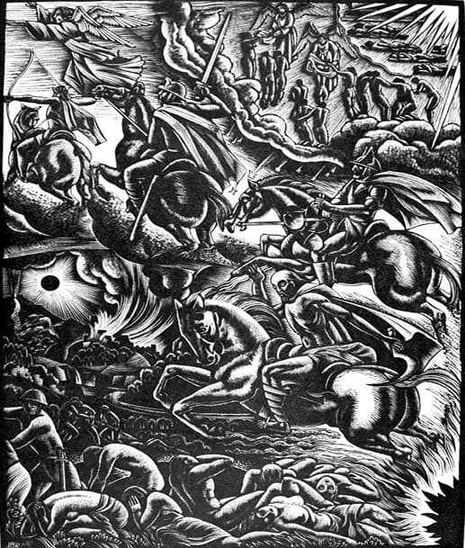

În mulțimea de rătăciri combătute de părintele Arsenie Vliangoftis în volumul său „Ereziile contemporane – o adevărată amenințare” (trad. rom. de Ieroschim. Ștefan Nuțescu, Sfântul Munte Athos, Editura Evanghelismos, 2006) se află poziția profesorului Savvas Agouridis (cunoscut profesor la catedra de Ermineutică biblică și Erminie a Noului Testament a Facultății de Teologie a Universității din Atena) privitoare la deschiderea creștinilor față de celelalte religii: „Lucrul de care cu adevărat avem nevoie acum în Grecia este cunoașterea obiectivă a islamismului și a iudaismului… este vorba… despre vecinii noștri și trebuie să înțelegem bine… că avem datoria de a învăța tradiția religioasă a vecinilor noștri… și de a-i accepta ca fiind deopotrivă cu noi. (…) Iudaismul și islamismul trebuie să fie acceptate de ortodocși ca fiind niște religii deopotrivă cu Ortodoxia. De asemenea, Budismul și în mod evident și alte religii constituie fenomene religioase, așa cum este Ortodoxia” (din cuvântul prezentat la al doilea Congres al Religiilor Lumii, San Francisco, 1990 - Apud Ereziile contemporane, pp. 175-176).
Această idee apostată a fost importată în spațiul creștin, scopul principal fiind distrugerea credinței creștine. În cuvântul prezentat la congresul anterior (primul Congres al Religiilor Lumii, Chicago 1893), marele yoghin Swami Vivekananda prezenta aceeași învățătură: „Dacă cineva din auditoriu crede că această unitate va rezulta prin triumful unei religii – oricare ar fi ea – și dispariția celorlalte, unuia ca acesta nu pot să îi spun decât: «Fratele meu, speranțele tale vor fi înșelate». Oare eu doresc ca și creștinii să fie hinduiști? Nicidecum… Creștinii nu trebuie să devină hinduiști sau budiști, nici ca aceștia să devină creștini, ci fiecare religie va trebui să își însușească duhul celorlalte religii, păstrându‑și totuși particularitățile ei, pentru a putea propăși potrivit propriilor legi” (idem, 157).
Părintele Arsenie Vliangoftis spune că „aceste cuvinte exprimă foarte limpede duhul sincretismului interreligios”. Numai că, în realitate, sincretismul este folosit de necreștini o metodă de manipulare prin care interlocutorii sunt atrași să descopere valorile religiilor pe care le resping. O dovadă clară o oferă declarația dată de Swami Vivekananda la întoarcerea sa în India: „Acesta este marele ideal care se află înaintea noastră, și fiecare dintre noi trebuie să se înarmeze pentru aceasta – cucerirea lumii de către India. Noi toți trebuie să ne înarmăm și să ne încordăm fiecare nerv pentru acest scop. Ridică‑te, Indie, și biruiește lumea prin spiritualitatea ta…” (Idem, p. 157. Am comentat aceste poziții aparent contradictorii în cartea mea „Zorii Apocalipsei”, Editura Egumenița, 2008, în capitolul „Iuda și «teologia dialogului»”).
Ar trebui să ne dăm seama că, prin discursul lor pacifist, liderii sincretismului încearcă să îi convingă pe creștini să se lepede de tradiția lor, pentru a primi în sufletele lor pseudovalorile celorlalte religii.
Vom vedea însă cum și un teolog ortodox – Savvas Agouridis, reușește să promoveze cugetul anti-tradiționalist. Vom face referire la cartea sa „Comentariu la Apocalipsă” (cartea a apărut la Editura Bizantină, București, 1997, în traducerea pr. Constantin Coman. Profesorul Agouridis a fost îndrumătorul și referentul tezei de doctorat a părintelui Coman, susținută la Atena în 1983).
Încă de la primul contact cu cartea (e greu de justificat de ce, în ediția românească, editorul a omis sau a refuzat să treacă pe coperta întâi și pe cotor numele autorului. Pentru o carte de teologie, o astfel de scăpare este inexplicabilă. Iar pe coperta patru apare un text, semnat Savvas Agouridis, fără a se preciza că este vorba de autorul cărții. Nu este acesta singurul comentariu ortodox la Apocalipsă, și nici singurul autorizat. Chiar și dacă volumul ar fi fost de referință era necesar ca, alături de titlu, să i se menționeze și autorul. De altfel, o carte nu devine de referință doar pentru că este promovată de o editură…), pe coperta patru citim: „Nu trebuie să-l corectăm noi pe Sfântul Ioan (profesorul Agouridis nu este convins că Apocalipsa este scrisă de Sfântul Ioan Evanghelistul: „Tradiția despre existența unui «presbiter Ioan» (diferit de Sfântul Apostol și Evanghelist Ioan – n.n.) este acceptată nu numai de iluștri teologi ai Bisericii primare, ci și de majoritatea cercetătorilor de astăzi. (…) Nu este deloc de neglijat nici tradiția care îl acceptă pe Sfântul Ioan Teologul, ucenicul lui Iisus, ca autor al Apocalipsei. Dintre greci amintim pe Em. Zolotas, V. Antoniadis, P. Bratsiotis, părintele Ioil Gianakopoulos. (…) Noi credem că s-a dat prea multă importanță problemei autorului, în timp ce, fără îndoială, mult mai important este, în amândouă cazurile, conținutul teologic care a fost adus la lumină de teologia biblică actuală, fie în ceea ce privește Evanghelia și Epistolele lui Ioan, fie în ceea ce privește Apocalipsa” - Comentariu la Apocalipsă, p. 27. Profesorul Agouridis prezintă o altă perspectivă greșită. Din punct de vedere ortodoxă este foarte important faptul că Apocalipsa îi aparține Sfântului Apostol Ioan, care a scris luminat de Dumnezeu. Problema autenticității cărții Apocalipsei și critica poziției prof. Agouridis va fi studiată separat…)), așa încât să-l facem să fie de acord cu concepțiile și cu părerile noastre, care în cele din urmă sunt în acord cu propriile noastre așteptări.” Această poziție este justă, însă chiar cel care o afirmă o contrazice nu după multă vreme. După câteva paragrafe citim: „Un model de neurmat îl constituie acea interpretare care a înțeles sau înțelege conținutul Apocalipsei privind evenimentele istorice concrete ca aplicându-se la evenimentele unei epoci ulterioare”. Altfel spus, nu trebuie să credem că Apocalipsa se referă la sfârșitul lumii, așa cum au tâlcuit atâția sfinți ai Bisericii. Profesorul Agouridis vrea să ne convingă că de fapt Sfântul Ioan vorbește despre criza vremii sale. Una dintre cele mai izbitoare minciuni promovate de profesorul Agouridis se regăsește și în pasajele în care comentează capitolul 13, cel mai comentat capitol al Apocalipsei. Redăm capitolul 13 în întregime tocmai pentru a se vedea în ce măsură comentariile profesorului sunt sau nu justificate:
„Și am văzut ridicându-se din mare o fiară, care avea zece coarne și șapte capete și pe coarnele ei zece cununi împărătești și pe capetele ei: nume de hulă. Și fiara pe care am văzut-o era asemenea leopardului, picioarele ei erau ca ale ursului, iar gura ei ca o gură de leu. Și balaurul i-a dat ei puterea lui și scaunul lui și stăpânire mare. Și unul din capetele fiarei era ca înjunghiat de moarte, dar rana ei cea de moarte fu vindecată și tot pământul s-a minunat mergând după fiară. Și s-au închinat balaurului, fiindcă i-a dat fiarei stăpânirea; și s-au închinat fiarei, zicând: Cine este asemenea fiarei și cine poate să se lupte cu ea? Și i s-a dat ei gură să grăiască semeții și hule și i s-a dat putere să lucreze timp de patruzeci și două de luni. Și și-a deschis gura sa spre hula lui Dumnezeu, ca să hulească numele Lui și cortul Lui și pe cei ce locuiesc în cer. Și i s-a dat să facă război cu sfinții și să-i biruiască și i s-a dat ei stăpânire peste toată seminția și poporul și limba și neamul. Și i se vor închina ei toți cei ce locuiesc pe pământ, ale căror nume nu sunt scrise, de la întemeierea lumii, în cartea vieții Mielului celui înjunghiat. Dacă are cineva urechi – să audă! Cine duce în robie de robie are parte; cine cu sabia va ucide trebuie să fie ucis de sabie. Aici este răbdarea și credința sfinților. Și am văzut o altă fiară, ridicându-se din pământ, și avea două coarne asemenea mielului, dar grăia ca un balaur și toată stăpânirea celei dintâi fiare ea o pune în lucrare, în fața ei. Și face pământul și pe locuitorii de pe el să se închine fiarei celei dintâi, a cărei rană de moarte fusese vindecată. Și face semne mari, încât și foc face să se pogoare din cer, pe pământ, înaintea oamenilor, și amăgește pe cei ce locuiesc pe pământ prin semnele ce i s-au dat să facă înaintea fiarei, zicând celor ce locuiesc pe pământ să facă un chip fiarei care a fost rănită cu sabia și a rămas în viață. Și i s-a dat ei să insufle duh chipului fiarei, ca chipul fiarei să și grăiască și să omoare pe toți câți nu se vor închina chipului fiarei. Și ea îi silește pe toți, pe cei mici și pe cei mari, și pe cei bogați și pe cei săraci, și pe cei slobozi și pe cei robi, ca să-și pună semn pe mâna lor cea dreaptă sau pe frunte. Încât nimeni să nu poată cumpăra sau vinde, decât numai cel ce are semnul, adică numele fiarei, sau numărul numelui fiarei. Aici este înțelepciunea. Cine are pricepere să socotească numărul fiarei; căci este număr de om. Și numărul ei este șase sute șaizeci și șase” (Apocalipsa 13, 1-18).

Comentariile profesorului Agouridis sunt următoarele: „Pentru interpretarea capitolului 13 s-a consumat multă cerneală. P. Bratsiotis explică suficient de bine motivele: mulți exegeți caută să găsească în cap. 13, în informațiile despre Antihrist, principalele cauze ale crizei epocii lor. Dar profetul Ioan se referă și aici nu la timpuri viitoare, îndepărtate, ci la epoca sa; prin imagini mișcătoare el prezintă războiul sălbatic purtat de Imperiul roman împotriva Bisericii, care se desfășura în zilele sale, dar care avea să ajungă la intensificarea maximă odată cu sosirea eshatonului, a nenorocirilor din urmă și a Împărăției lui Dumnezeu. Ioan scrie pentru epoca lui, despre evenimente care privesc generația lui.” (Savvas Agouridis, Comentariu la Apocalipsă, pp. 244-245)
Se pot aduce împotriva acestei tâlcuiri o mulțime de citate, de la Sfinții Părinți până la Cuvioșii părinți, necanonizați încă, ai secolului XX. E de ajuns să reproducem câteva citate în această problemă. Sfântul Andrei al Cezareii, care în secolul al V-lea a încercat să strângă mărturiile anterioare privitoare la înțelegerea Apocalipsei, scria: „Stăruirea cu luare-aminte asupra numărului fiarei, precum și altele din cele ce s-au scris despre el, vor descoperi vremea ispitei celor ce vor gândi înțelepțește și vor avea trezvie întru acea vreme” (apud Arhiepiscopul Averchie Taușev, părintele Serafim Rose, Apocalipsa în învățătura Sfinților Părinți, p. 167). Sfântul Andrei arată clar că este nevoie de o înțelegere ortodoxă a cărții Apocalipsei pentru a recunoaște, în vremurile din urmă, împlinirea acesteia: „Se va sili să pună numele cel pierzător al potrivnicului și înșelătorului pe mâna lor cea dreaptă, spre a le tăia lucrarea celor drepte și bune și, de asemenea, pe frunțile lor, spre a-i învăța pe cei amăgiți să îndrăznească întru întuneric și întru înșelăciune; însă nu va fi primit de cei ale căror fețe sunt pecetluite cu dumnezeiasca lumină. Iar pecetea și numărul fiarei se va vesti pretutindeni, tuturor celor ce vor cumpăra și celor ce vor vinde, așa încât ceilalți, care nu l-au primit, să pătimească moarte cumplită prin lipsa celor de trebuință.” (idem, p. 166)
Există o întreagă literatură ortodoxă care sprijină poziția Sfântului Andrei al Cezareii, literatură care implicit contestă perspectiva profesorului Agouridis. Unul dintre cei mai mari teologi ai secolului trecut, Sfântul Ioan Maximovici, scrie despre apropierea Înfricoșatei Judecăți: „Semnele apropierii ei sunt date și în Evanghelie, și în Apocalipsa Sfântului Apostol Ioan Teologul. Apocalipsa vorbește despre evenimentele sfârșitului lumii și despre Înfricoșătoarea judecată cu precădere în simboluri și în ghicitură, dar Sfinții Părinți au tâlcuit-o și există o tradiție autentică a Bisericii care ne vorbește și despre semnele apropierii sfârșitului lumii și despre Judecata de Apoi.” (Sfântul Ioan Maximovici, Predici și îndrumări duhovnicești, Editura Sophia, 2001, p. 162)
Tradiția aceasta „autentică a Bisericii” este totuși ignorată de profesorul Agouridis. Tot Sfântul Ioan Maximovici spunea: „Când privim la viața din jur, cei ce pot vedea văd că tot ce a fost prezis despre sfârșitul lumii se împlinește.” Vrem sau nu, vedem că se înmulțește și numărul proorocilor și al învățătorilor mincinoși…
Prin sincretismul afișat, Swami Vivekananda – promotorul ideilor lui Sri Ramakrishna - încerca să distrugă credința creștină și să convertească lumea la hinduism. Dacă profesorul Savvas Agouridis ar fi avut o poziție similară în implicarea sa interreligioasă, prin poziția sa ar fi căutat să atragă oamenii de alte credințe la credința creștină. El însă nu face asta, ci dimpotrivă. Propovăduiește o învățătură în care amestecă dreapta credința cu idei greșite. Astfel contribuie la distrugerea credinței în Hristos, luptând de aceeași parte a baricadei cu Vivekananda, cu Ramakrisna și cu alți apostați.
Sfântul Teofan Zăvorâtul, criticând tipul de teologie modernistă în care raportarea la Adevăr se face prin prisma propriilor cugetări și în defavoarea predaniei Sfinților Părinți, spune următoarele: „Mintea nemțească face doar pe deșteapta, ea n‑are normă de credință și o tot caută; nu se apucă să cerceteze credința, ci să născocească și să clădească, și chiar după ce a clădit nu se potolește o dată pentru totdeauna, ci tot mai caută, tot mai caută, fără a se mulțumi vreodată cu ce găsește. Pe bătăuș îl mănâncă mâinile, pe flecar îl mănâncă limba, iar pe neamț îl mănâncă creierul și nu‑i dă pace defel. Duhul «înnoirii», al necurmatei inovații, alcătuiește esența minții nemțești” (prin minte nemțească înțelegând nu mintea unui german și modul de teologhisire protestant – n.n.; Sfântul Teofan, Zăvorâtul, Răspunsuri la întrebări ale intelectualilor, Editura Sophia, București, 2005, p. 59)
Prin poziția pe care a expus-o în cartea sa despre Apocalipsă, profesorul Agouridis a arătat că are „minte nemțească”. Comparând poziția sa cu învățătura sfinților care au scris despre Apocalipsă, ne dăm seama că, din punct de vedere ortodox, cartea sa nu poate fi considerată un reper pentru înțelegerea ultimei cărți a Noului Testament. Ci dimpotrivă…